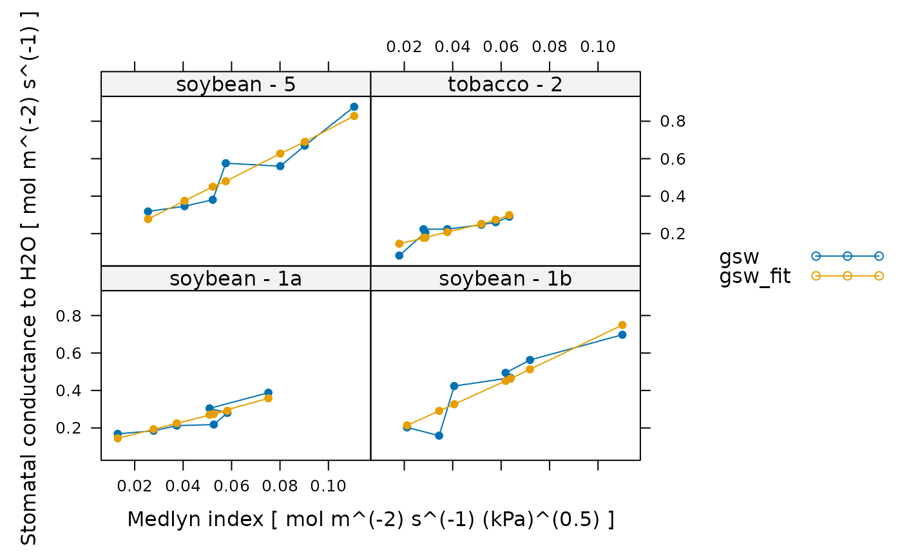

Fits the Medlyn model to an experimental curve
fit_medlyn.RdFits measured values of stomatal conductance using the Medlyn model. This function can accomodate alternative column names for the variables taken from gas exchange log files in case they change at some point in the future. This function also checks the units of each required column and will produce an error if any units are incorrect.
Usage
fit_medlyn(
replicate_exdf,
a_column_name = 'A',
csurface_column_name = 'Csurface',
gsw_column_name = 'gsw',
vpdleaf_column_name = 'VPDleaf'
)Arguments
- replicate_exdf
An
exdfobject representing one Ball-Berry curve.- a_column_name
The name of the column in
replicate_exdfthat contains the net assimilation inmicromol m^(-2) s^(-1).- csurface_column_name
The name of the column in
replicate_exdfthat contains the CO2 concentration at the leaf surface inmicromol mol^(-1).- gsw_column_name
The name of the column in
replicate_exdfthat contains the stomatal conductance to water vapor inmol m^(-2) s^(-1).- vpdleaf_column_name
The name of the column in
replicate_exdfthat contains the vapor pressure deficit at the leaf surface inkPa.
Details
The Medlyn model is a simple way to describe the response of a leaf's stomata
to its assimilation rate and local environmental consitions. Specifically, it
predicts that the stomatal conductance to water vapor (gsw) using the
following equation:
gsw = g0 + 1.6 * (1 + g1 / sqrt(VPDleaf)) * A / Csurface,
where VPDleaf is the vapor pressure deficit at the leaf surface,
A is the net CO2 assimilation rate, Csurface is the CO2
concentration at the leaf surface, g0 is the stomatal conductance when
A is zero, and g1 is a parameter describing the leaf's combined
response to environmental parameters.
Fits from this model are typically plotted with gsw on the Y-axis and
A / (Csurface * sqrt(VPDleaf)) on the X-axis. Because g1 is
typically close to or larger than 1, the model exhibits an almost linear
response of gsw to A / (Csurface * sqrt(VPDleaf)), which we
refer to as the "Medlyn index" in analogy with the Ball-Berry index (see
calculate_ball_berry_index).
Although this model is certainly an oversimplification, it does encode some important stomatal responses. For example, when humidity is low, the stomata close, reducing stomatal conductance. Likewise, if the CO2 concentration around the leaf is depleted, the stomata open to allow more CO2 to diffuse into the leaf's interior, increasing somatal conductance.
The Medlyn model was originally described in Medlyn, B. E. et al. "Reconciling the optimal and empirical approaches to modelling stomatal conductance." Global Change Biology 17, 2134–2144 (2011) [doi:10.1111/j.1365-2486.2010.02375.x ].
Medlyn parameters are typically determined using the same type of response
curve measured for parameterizing the Ball-Berry model. See
fit_ball_berry for more details.
This function uses nls to perform the fit, beginning from
an initial guess of g0 = 0.005 and g1 = 4.
This function assumes that replicate_exdf represents a single response
curve. To fit multiple curves at once, this function is often used along with
by.exdf and consolidate.
Value
A list with two elements:
fits: Anexdfobject including the measured values and the fitted values of stomatal conductance. The fitted values will be stored in a column whose name is determined by appending'_fits'to the end ofgsw_column_name; typically, this will be'gsw_fits'. Also includes residuals in thegsw_residualscolumn and values of the Medlyn model parametersmedlyn_g0andmedlyn_g1.parameters: Anexdfobject including the fitting parameters and R-squared value. The Medlyn model parameters are stored in themedlyn_g0andmedlyn_g1columns, their standard errors are stored in themedlyn_g0_errandmedlyn_g1_errcolumns. Other statistical descriptors of the fit as calculated byresidual_statsare also included.
Examples
# Read an example Licor file included in the PhotoGEA package, calculate
# additional gas properties, calculate the Ball-Berry index, define a new column
# that uniquely identifies each curve, and then perform a fit to extract the
# Ball-Berry parameters from each curve.
licor_file <- read_gasex_file(
PhotoGEA_example_file_path('ball_berry_1.xlsx')
)
licor_file <- calculate_total_pressure(licor_file)
licor_file <- calculate_gas_properties(licor_file)
licor_file[,'species_plot'] <-
paste(licor_file[,'species'], '-', licor_file[,'plot'])
# Fit just one curve from the data set (it is rare to do this)
one_result <- fit_medlyn(
licor_file[licor_file[, 'species_plot'] == 'soybean - 1a', , TRUE]
)
# Fit all curves in the data set (it is more common to do this)
medlyn_results <- consolidate(by(
licor_file,
licor_file[, 'species_plot'],
fit_medlyn
))
# View the fitting parameters for each species / plot
col_to_keep <- c('species', 'plot', 'species_plot', 'medlyn_g0', 'medlyn_g1')
medlyn_results$parameters[ , col_to_keep]
#> species plot species_plot medlyn_g0 medlyn_g1
#> 1 soybean 1a soybean - 1a 0.10346656 0.9324673
#> 2 soybean 1b soybean - 1b 0.08805109 2.6410048
#> 3 soybean 5 soybean - 5 0.11431838 2.9748932
#> 4 tobacco 2 tobacco - 2 0.09017758 0.8902868
# View the fits for each species / plot
lattice::xyplot(
gsw + gsw_fit ~ medlyn_index | species_plot,
data = medlyn_results$fits$main_data,
type = 'b',
pch = 16,
auto = TRUE,
xlab = paste('Medlyn index [', medlyn_results$fits$units$medlyn_index, ']'),
ylab = paste('Stomatal conductance to H2O [', medlyn_results$fits$units$gsw, ']')
)
